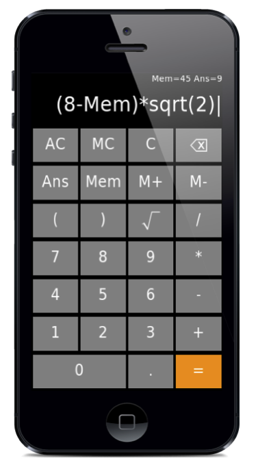

LambdaNative allows you to create high-quality code in the high-level functional language Scheme, dramatically shortening development time, and producing better code with fewer bugs.
LambdaNative builds native applications on a wide range of platforms including iOS, Android, Blackberry, OS X, Linux, Windows, OpenBSD, NetBSD and OpenWrt, from a single source code.
LambdaNative is freely available under the BSD license, extensively documented, and hosted on GitHub.
LambdaNative is developed and maintained by the Pediatric Anethesia Research Team (PART) and the Electical and Computer Engineering in Medicine (ECEM) group at the University of British Columbia (UBC).
LambdaNative is currently used for clinical trials of medical technology in more than 10 countries involving around 100,000 subjects in all.
(define gui #f)
(define calculator-subdisplay #f)
(define calculator-display #f)
(define Ans #f)
(define Mem 0)
(define keypad `((
( (#\A "AC") (#\M "MC") #\C (,delchar ,glgui_keypad_delete.img) )
( (#\a "Ans") (#\m "Mem") (#\p "M+") (#\q "M-") )
( #\( #\) (#\S ,sqrt.img) #\/ )
( #\7 #\8 #\9 #\* )
( #\4 #\5 #\6 #\- )
( #\1 #\2 #\3 #\+ )
( (#\0 "0" 2.) #\. (#\= "=" 1. ,DarkOrange))
)))
(define (number->neatstring n)
(if (not (##flonum? n)) (number->string n)
(let* ((s (number->string (fl/ (flfloor (fl+ (fl* (flo n) 1.0e10) 0.5)) 1.0e10)))
(sl (string-length s))
(b (substring s 0 1))
(e (substring s (- sl 1) sl)))
(string-append (if (string=? b ".") "0" "")
(if (string=? e ".") (substring s 0 (- sl 1)) s)))))
(define (calculator-updatesub)
(glgui-widget-set! gui calculator-subdisplay 'label
(string-append "Mem=" (number->neatstring Mem) " Ans=" (if Ans (number->neatstring Ans) "") " ")))
(define (calculator-evaluate)
(let* ((e (glgui-widget-get gui calculator-display 'label))
(evalstr (string-append "\\" e ";"))
(res (with-input-from-string evalstr (lambda ()
(with-exception-catcher (lambda (e) #f) (lambda () (eval (read))))))))
(set! Ans res)
(glgui-widget-set! gui calculator-display 'label (if Ans (number->neatstring Ans) ""))
(glgui-widget-set! gui calculator-display 'bgcolor (if Ans #f Red))
(calculator-updatesub)))
(define (calculator-C) (glgui-widget-set! gui calculator-display 'label ""))
(define (calculator-AC) (calculator-C) (set! Ans #f) (set! Mem 0) (calculator-updatesub))
(define (calculator-MC) (set! Mem 0) (calculator-updatesub))
(define (calculator-M+) (if Ans (set! Mem (+ Mem Ans))) (calculator-updatesub))
(define (calculator-M-) (if Ans (set! Mem (- Mem Ans))) (calculator-updatesub))
(define (calculator-Mem)
(let ((curstr (glgui-widget-get gui calculator-display 'label)))
(glgui-widget-set! gui calculator-display 'label (string-append curstr "Mem"))))
(define (calculator-Ans)
(let ((curstr (glgui-widget-get gui calculator-display 'label)))
(glgui-widget-set! gui calculator-display 'label (string-append curstr "Ans"))))
(define (calculator-sqrt)
(let ((curstr (glgui-widget-get gui calculator-display 'label)))
(glgui-widget-set! gui calculator-display 'label (string-append curstr "sqrt("))))
(main
;; initialization
(lambda (w h)
(make-window 320 480)
(glgui-orientation-set! GUI_PORTRAIT)
(set! gui (make-glgui))
(let* ((w (glgui-width-get))
(h (glgui-height-get)))
(set! calculator-subdisplay (glgui-label gui 0 (- h 20) w 20 "" calc_14.fnt White))
(glgui-widget-set! gui calculator-subdisplay 'align GUI_ALIGNRIGHT)
(set! calculator-display (glgui-label gui 5 (- h 80) (- w 10) 60 "" calc_32.fnt White))
(glgui-widget-set! gui calculator-display 'align GUI_ALIGNRIGHT)
(glgui-widget-set! gui calculator-display 'focus #t)
(let ((wgt (glgui-keypad gui 5 5 (- w 10) (- h 80 5) calc_24.fnt keypad)))
(glgui-widget-set! gui wgt 'rounded #f)
(glgui-widget-set! gui wgt 'floatinghighlight #f))
(calculator-updatesub)
))
;; events
(lambda (t x y)
(let ((skipevent #f))
(if (= t EVENT_KEYRELEASE)
(cond
((= x EVENT_KEYESCAPE) (terminate))
((= x (char->integer #\=)) (calculator-evaluate) (set! skipevent #t))
((= x (char->integer #\A)) (calculator-AC) (set! skipevent #t))
((= x (char->integer #\C)) (calculator-C) (set! skipevent #t))
((= x (char->integer #\M)) (calculator-MC) (set! skipevent #t))
((= x (char->integer #\p)) (calculator-M+) (set! skipevent #t))
((= x (char->integer #\q)) (calculator-M-) (set! skipevent #t))
((= x (char->integer #\a)) (calculator-Ans) (set! skipevent #t))
((= x (char->integer #\m)) (calculator-Mem) (set! skipevent #t))
((= x (char->integer #\S)) (calculator-sqrt) (set! skipevent #t))
))
(if (not skipevent) (glgui-event gui t x y))))
;; termination
(lambda () #t)
;; suspend
(lambda () (glgui-suspend))
;; resume
(lambda () (glgui-resume))
)
This example application is a complete cross-platform (iOS, Android etc.) calculator that supports rational numbers and complex arithmetic, all in 100 lines of code.
Publications involving LambdaNative-based technology:
Petersen CL, Ansermino JM, Dumont GA. A Smartphone-based EEG Anesthesia Simulator. 6th NWAC World Anesthesia Convention, Vancouver, BC, April 29 - May 2 2015.
Petersen CL, Görges M, Ansermino JM, Dumont GA. Simulating Dynamic Hypnotic Drug Effects with an EEG Anesthesia Simulator. 6th NWAC World Anesthesia Convention, Vancouver, BC, April 29 - May 2 2015.
Chen TP, Petersen CL, Ansermino JM, Dumont GA. Comparing the operating range of low-cost pulse oximeters. Society of Technology in Anesthesia (STA) 2015, Phoenix AZ.
Petersen CL, Ansermino JM, Dumont GA. Towards a Depth of Hypnosis EEG Simulator. Society of Technology in Anesthesia (STA) 2015, Phoenix AZ.
Görges M, Petersen CL, Ansermino JM. lnHealth - A rapid medical software development platform using IoT communication standards for medical device interoperability. Society of Technology in Anesthesia (STA) 2015, Phoenix AZ.
Dunsmuir DT, Payne BA, Cloete G, Petersen CL, Görges M, Lim J, von Dadelszen P, Dumont GA, Ansermino JM. Development of mHealth Applications for Pre-Eclampsia Triage. IEEE Journal of Biomedical and Health Informatics 11/2014; 18(6):1857.
Dustin D, Gan H, Chiu M, Petersen CL, Dumont GA, Ansermino JM. A Mobile Application for Measuring Respiratory Rate. Canadian Pediatric Anesthesia Society (CPAS) Meeting 2014, Montreal QC September 26-28, 2014.
Petersen CL. The Phone Oximeter. In Mobile Point-of-Care Monitors and Diagnostic Device Design, CRC Press, ISBN 9781466589292, September 2014.
Petersen CL, Görges M, Ansermino JM, Dumont GA. A Scheme-Based Closed-Loop Anesthesia System. Proceedings of ILC 2014, Montreal Canada.
Petersen CL, Ansermino JM, Dumont GA. iSwirl: Self-Affine Visualization of PPG and ECG Waveforms. Society of Technology in Anesthesia (STA) 2014, Orlando FL.
Petersen CL, Gan H, Görges M, Ansermino JM, Dumont GA. Comparison of Motion Artifact Response in Three Mobile Pulse Oximeters. Society of Technology in Anesthesia (STA) 2014, Orlando FL.
Umedaly A, West N, van Heusden K, Görges M, Petersen CL, Dumont GA, Ansermino JM, Merchant RN. Robust closed-loop control of anesthesia in adults undergoing elective surgery. Society of Technology in Anesthesia (STA) 2014, Orlando FL.
Dunsmuir D, Karlen W, Gan H, Chiu M, Petersen CL, Dumont GA, Ansermino JM. The design of a respiratory rate mobile application. Society of Technology in Anesthesia (STA) 2014, Orlando FL.
Görges M, Baxter P, Coelho T, Cooper B, Gagne J, Thomas P, Petersen CL, Dumont GA, Ansermino JM. The portable operating room tracker (telePORT) - Analysis of system usage and identification of areas for improvement. Society of Technology in Anesthesia (STA) 2014, Orlando FL
Petersen CL, Chen TP, Ansermino JM, Dumont GA. Design and Evaluation of a Low- Cost Smartphone Pulse Oximeter. Sensors 2013 13 16882
Petersen CL, Gan H, Görges M, Dumont GA, Ansermino JM. Systematic Evaluation of Mobile Phone Pulse Oximetry Performance. Anesthesiology 2013, San Francisco, CA
Görges M, van Heusden K, West N, Umedaly A, Petersen CL, Dumont GA, Ansermino JM, Merchant RN. Response to noxious stimuli in closed-loop controlled propofol anesthesia with target controlled infusion of remifentanil. International Society for Anaesthetic Pharmacology (ISAP) 2013
Petersen CL, Görges M, Dustin D, Ansermino JM, Dumont GA. Experience Report: Functional Programming of mHealth Applications. International Conference on Functional Programming (ICFP) 2013
Gan H, Petersen C, MacInnis JM, Dumont GA, Ansermino JM. Calibration and evaluation of a novel low cost pulse oximeter sensor. 2013 Annual Meeting of the Canadian Anesthesiologists Society. Calgary, Canada. Jun 21st - 24th.
Petersen CL, Gan H, MacInnis MJ, Dumont GA, Ansermino JM. Ultra-low-cost clinical pulse oximetry. Proc. of Annual International Conference of the IEEE Engineering in Medicine and Biology Society 2013 p. 2874-2877
Hudson J, Nguku SM, Sleiman J, Karlen W, Dumont GA, Petersen CL, Warriner CB, Ansermino JM. Usability testing of a prototype Phone Oximeter with healthcare providers in high- and low-medical resource environments. Anesthesia 2012 67 957
Petersen CL, Gan H, Ansermino JM, Dumont GA. Comparing a new ultra-low cost pulse oximeter with two commercial oximeters, IAMPOV International Symposium, Yale University, New Haven, June 29 - July 1st, 2012
Chandler JR, Cooke E, Petersen CL, Karlen W, Froese N, Lim J, Ansermino JM. Pulse oximeter plethysmograph variation and its relationship to the arterial waveform in mechanically ventilated children. J Clin Monit Comput. 2012 Mar 10. [Epub ahead of print]
van Heusden K, Dumont GA, Soltesz K, Petersen CL, West N, Ansermino JM. Clinical evaluation of closed-loop controlled propofol infusion in children. World Congress of Anesthesiologists, Buenos Aries, Argentina, March 25-30, 2012.
West N, Dumont GA, van Heusden K, Khosravi S, Petersen CL, Ansermino JM. The administration of closed-loop control of anesthesia for gastrointestinal endoscopic investigations in children. Society for Pediatric Anesthesia AAP Pediatric Anesthesiology Annual Meeting, Tampa, FL, USA, February 23-26, 2012.
Petersen CL, Ansermino JM, Dumont GA. Audio Pulse Oximeter. Society for Technology in Anesthesia 2012 Annual Meeting, Palm Beach, FL, USA, January 18-21, 2012.
Petersen CL, Ansermino JM, Dumont GA. High-speed algorithm for plethysmograph peak detection in real-time applications. Society for Technology in Anesthesia 2012 Annual Meeting, Palm Beach, FL, USA, January 18-21, 2012.
Van Heusden K, Dumont GA, Soltesz K, Petersen CL, West N, Ansermino JM. Robust PID control for closed-loop propofol infusion in children. Society for Technology in Anesthesia 2012 Annual Meeting, Palm Beach, FL, USA, January 18-21, 2012.
Dunsmuir D, Petersen CL, Karlen W, Lim J, Dumont GA, Ansermino JM. The Phone Oximeter for mobile spot-check. Society for Technology in Anesthesia 2012 Annual Meeting, Palm Beach, FL, USA, January 18-21, 2012.
Görges M, Petersen CL, Ansermino JM. Capturing vital signs for research in a multi-bed monitoring environment. Proceedings of the 2011 Society for Technology in Anesthesia Annual Meeting p. A32.
Dumont G, Liu N, Petersen CL, Chazot T, Fischler M. Closed-Loop Administration of Propofol Guided by the NeuroSense: Clinical Evaluation Using Robust Proportional- Integral-Derivative Design. American Society of Anesthesiologists (ASA) Annual Meeting 2011.
Karlen W, Hudson J, Lim J, Petersen CL, Anand R, Dumont GA, Ansermino JM The Phone Oximeter. IEEE Engineering in Medicine and Biology Society Unconference, Boston, USA, August 30, 2011.
Karlen W, Dumont G, Petersen CL, Gow J, Lim J, Sleiman J, Ansermino JM. Human- centered Phone Oximeter interface design for the operating room. Proceedings of the International Conference on Health Informatics, Rome, Italy, 2011. p. 433.
Chandler JRS, Cooke E, Petersen CL, Froese N, Lim J, Amsermino JM. Arterial & oximeter wave relationship in ventilated children. Canadian Anesthesiologists Society 2010 Annual Meeting, Montreal, Canada, Jun 25-29, 2010.
Chandler JR, Cooke E, Petersen CL, Froese N, Lim J, Ansermino JM. Arterial and plethysmograph waveform relationship in children, 2 sides of the same coin? UBC Department of Anesthesiology, Pharmacology and Therapeutics Research Day, Vancouver, Canada, Jun 23, 2010.
Chandler JRS, Cooke E, Petersen CL, Froese N, Lim J, Ansermino JM. Are respiratory induced changes in pulse pressure and pulse oximeter plethysmograph wave amplitude related in ventilated children? International Anesthesia Research Society Annual Meeting; Honolulu, HI, USA, Mar 20-23, 2010.
Karlen W, Petersen CL, Pickard A, Dumont G, Ansermino JM. Capillary Refill Time Assessment Using a Mobile Phone Application (iRefill). ASA abstracts 2010.